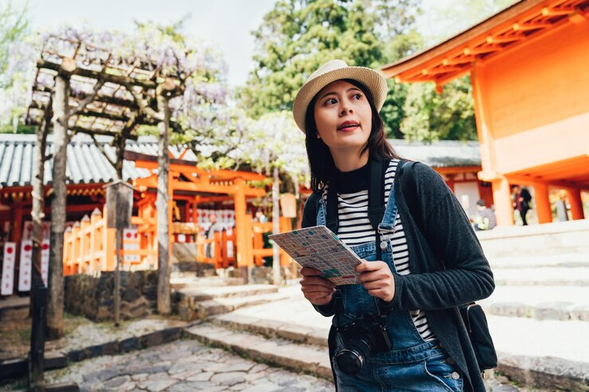
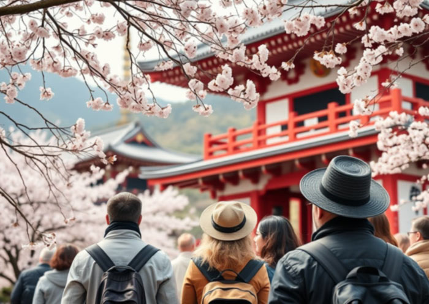
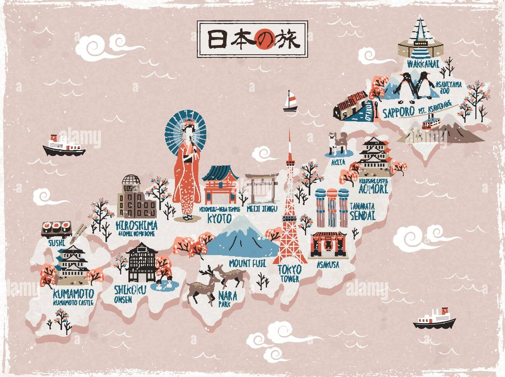
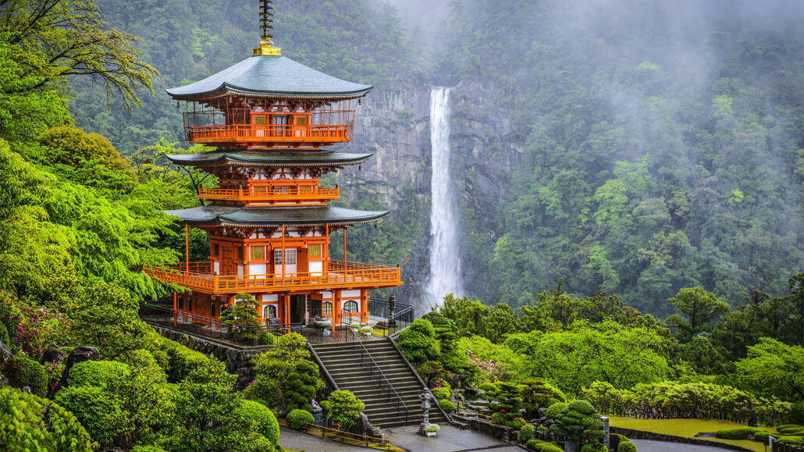
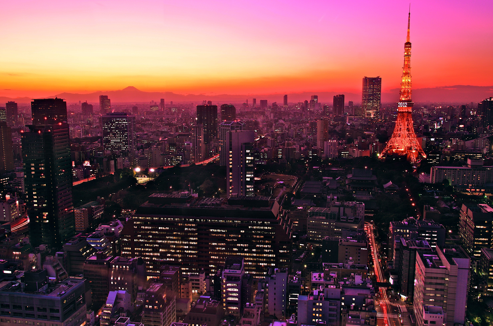
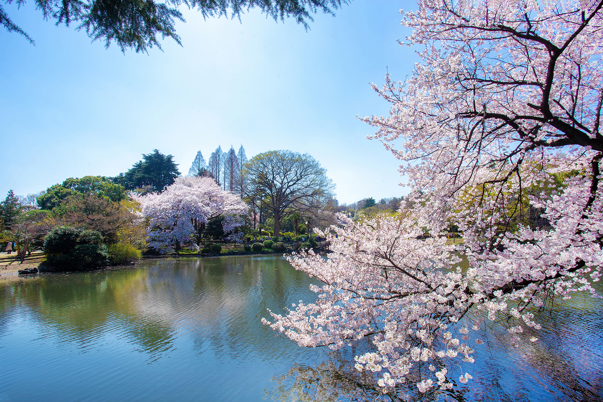

Tourism in Japan
Tourism in Japan offers a journey through timeless traditions, breathtaking landscapes, and vibrant modern cities, creating an experience unlike any other in the world.
Tourism in Japan offers a unique experience shaped by centuries of tradition, deep respect for nature, and a strong sense of cultural identity. Visitors can explore historical landmarks, rural landscapes, and modern urban environments, all within a country that carefully preserves its heritage while embracing innovation.
From ancient temples and peaceful gardens to vibrant cities filled with cutting-edge technology, Japan presents a diverse and unforgettable destination. Each region offers its own atmosphere, customs, and experiences, making tourism in Japan a journey through both time and space.


Experiencing Tourism in Japan
Tourism in Japan offers a diverse and immersive experience shaped by a unique combination of history, nature, and contemporary life. Visitors are able to explore ancient temples, traditional villages, and sacred landscapes that reflect centuries of cultural development. These locations provide insight into the values of harmony, respect, and tradition that remain central to Japanese society.
In addition to its historical heritage, Japan is known for its vibrant urban environments and modern infrastructure. Cities such as Tokyo, Kyoto, and Osaka attract millions of visitors each year with their blend of modern architecture, advanced technology, and everyday cultural practices. This coexistence of tradition and innovation makes tourism in Japan both dynamic and meaningful.

Travel Experience and Accessibility
Japan is widely recognized as a tourist-friendly destination due to its efficient transportation system, clear organization, and high level of safety. High-speed trains, local rail networks, and well-developed public transport allow visitors to travel easily between cities and regions. Clear signage, punctual services, and modern infrastructure contribute to a smooth and comfortable travel experience.

Visual Highlights of Japan


